Einführung
Joern Ploennigs · AI4SC
Midjourney: Engineers working with digital building models
Kontakt
Prof. Dr.-Ing. habil. Jörn Plönnigs
KI für Digitales Bauen
Büro
Justus-von-Liebig-Weg 2, Raum 114
E-Mail
Joern.Ploennigs@uni-rostock.de
Telefon
0381 498-3500
Lernziele und Motivation
Was Sie lernen
- Grundlagen der Programmierung und der Datenbanken
- Anforderungen für Softwareaufgaben formulieren
- Code mit KI-Unterstützung entwerfen
- Python-Code lesen und verstehen
- Ergebnisse gegen die Anforderung verifizieren
- Einfache Datenbanken entwerfen und abfragen
Wozu
- Programmierverständnis für Ingenieuraufgaben entwickeln
- Software für Ingenieurprobleme entwerfen und prüfen
- KI-Werkzeuge kompetent und kritisch einsetzen
- Software beurteilen statt ihr blind zu vertrauen
- Grundlage für BIM, GIS und Simulation
- Verständnis für die digitale Transformation entwickeln
Vorlesungsplanung
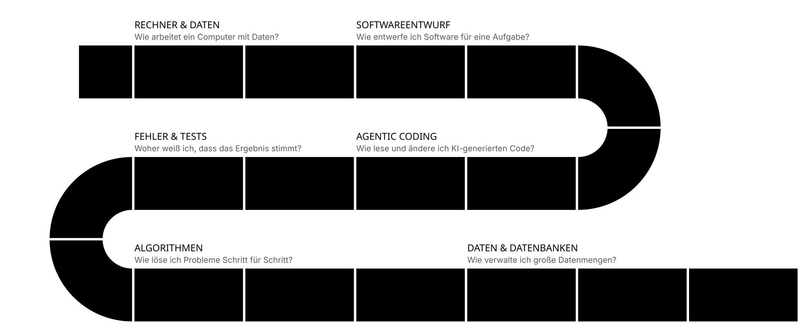
Vorlesungsinhalte
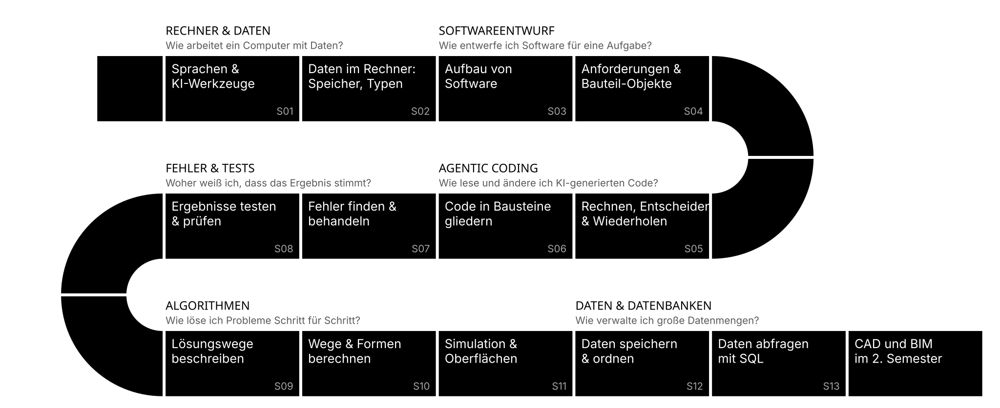
Übungsstruktur
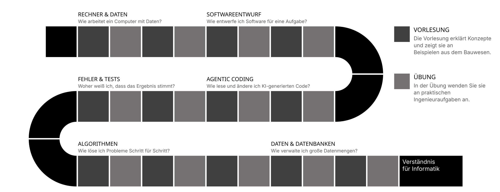
Vorlesungsfolien
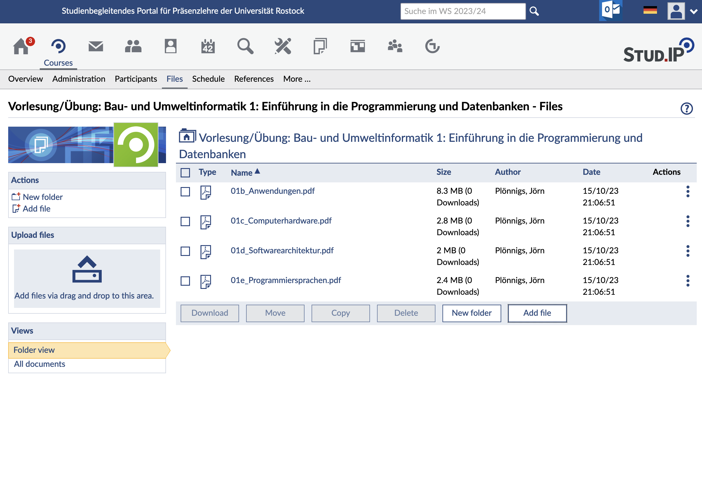
Vorlesungsdokumentation
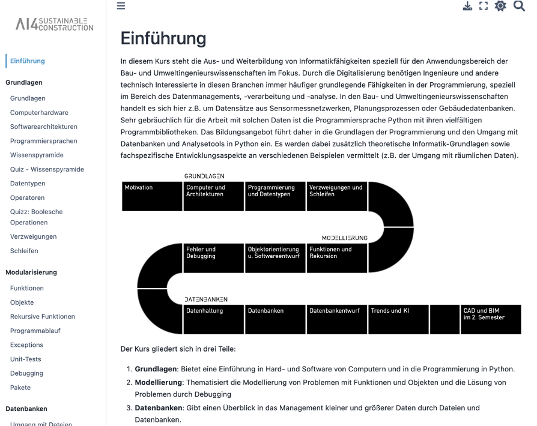
Übung
Kontakt Übung
Dr.-Ing. Markus Berger
KI für Digitales Bauen
Büro
Justus-von-Liebig-Weg 2, Raum 107
E-Mail
Markus.Berger@uni-rostock.de
Telefon
0381 498-3503
Übungen
Informationen zu den Übungen:
Mittwoch 09:15-10:45 Uhr, HS 1
Übungsinhalte:
- Lernen Software zu entwerfen
- Richtigen Umgang mit KI-Tools erlernen
- Code an Ingenieuraufgaben anpassen lernen
- Code lesen und prüfen lernen
- Fragen zu Vorlesung und Übung klären
Hinweis
Ablauf, Aufgaben und Abgabe stellt Markus Berger in der ersten Übung am Mittwoch vor.
Prüfungszulassung
- Bewertung je Übung: erfüllt oder nicht erfüllt
- Keine Teilleistungen
- Zulassung: mindestens 50 % der Übungen erfüllt
- Umfangreichere Übungen zählen mehr
Klausur
Die Klausur prüft fundiertes Programmierverständnis ohne KI-Werkzeuge: Code lesen, anpassen und verifizieren. Nutzen Sie in den Übungen gern KI-Werkzeuge, aber erklären und prüfen Sie das Ergebnis selbst.
| Thema | Gewichtung |
|---|---|
| Computer & Daten | 10 % |
| Softwareentwurf | 15 % |
| Agentic Coding | 05 % |
| Fehler & Tests | 20 % |
| Algorithmen | 30 % |
| Daten & Datenbanken | 20 % |
Motivation
Hörsaalfrage
Was ist „Informatik“?
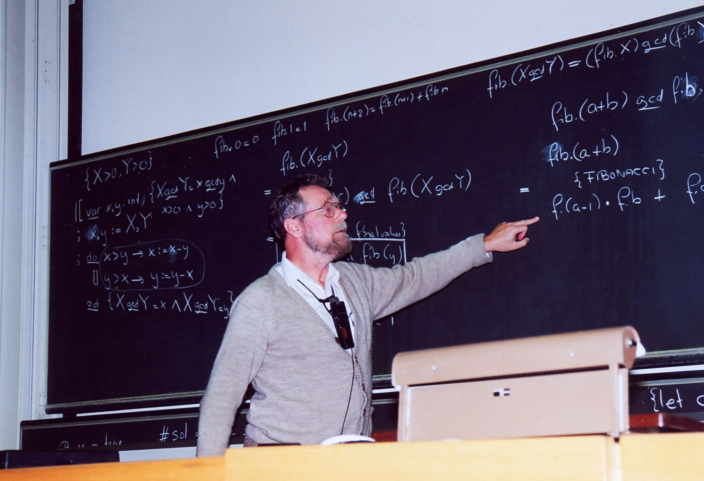
Definition: Informatik
Informatik
Informatik ist die Wissenschaft von der systematischen Darstellung, Verarbeitung, Speicherung und Übertragung von Informationen, insbesondere der automatischen Verarbeitung mit Hilfe von Computern. [Duden Fremdwörterbuch, 1974]
Ursprung u. a.: Mathematik (Logik, Algorithmen) und Elektrotechnik (Hardware)
Wo brauchen Ingenieure Informatik?
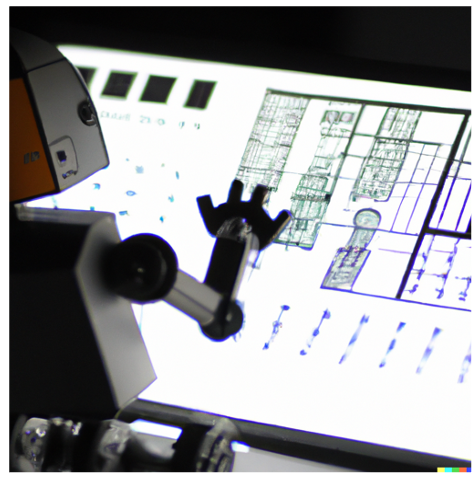
- Computer-Aided Design (CAD)
- Virtuelle Umgebungen
- Tragwerksplanung
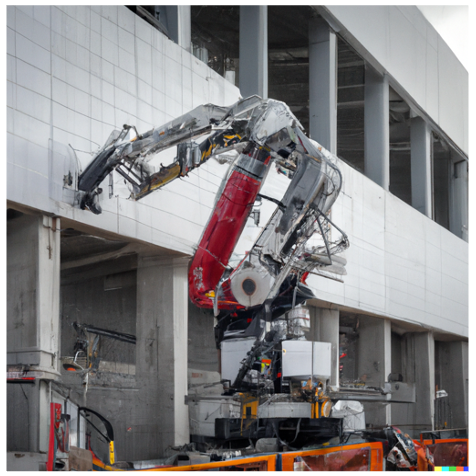
- Bauprozessautomatisierung
- Messungen zur Abnahme
- Baurobotik
- Geoinformationssysteme
- Facility Management
- Gebäudeautomation
Entwurf: CAD - Computer-Aided Design
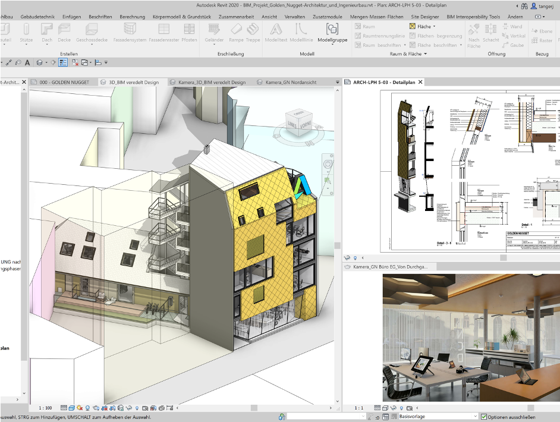
CAD
Softwareanwendungen zum Entwerfen, Konstruieren und Präsentieren von Konstruktionszeichnungen, sowohl für 2D- als auch für 3D-Modelle. [DIN EN ISO 10209, 2012]
Mehr dazu in:
Ingenieursinformatik 2: CAD und BIM
im 2. Semester
Entwurf: Virtuelle Umgebungen
Anwendungen, die es erlauben, Entwürfe in VR (Virtual Reality) oder AR (Augmented Reality) zu visualisieren und zu erkunden.
Mehr dazu in:
Entwurfsvisualisierung
im 4-6. Semester (Optional)
Entwurf: Tragwerksplanung
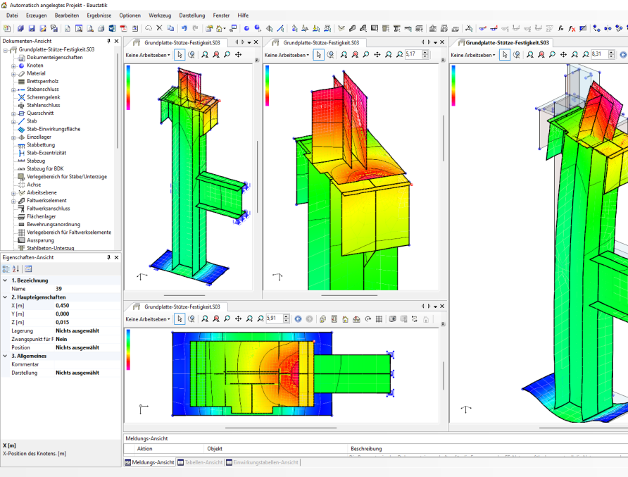
Tragwerksplanung
Ziel der Tragwerksplanung ist es, die erforderliche Tragfähigkeit, Gebrauchstauglichkeit und Dauerhaftigkeit einer Baukonstruktion während der vorgesehenen Nutzungsdauer sicherzustellen. [DIN EN 1990, 2021]
Mehr dazu in:
Baustatik
im 3. Semester
Bau: Bauprozessüberwachung
Automatisierung verschiedener Schritte
- Bautagebuch
- Bauzeitenmanagement
- Bauprojektmanagement
Mehr dazu in:
Baubetrieb
im 4. Semester
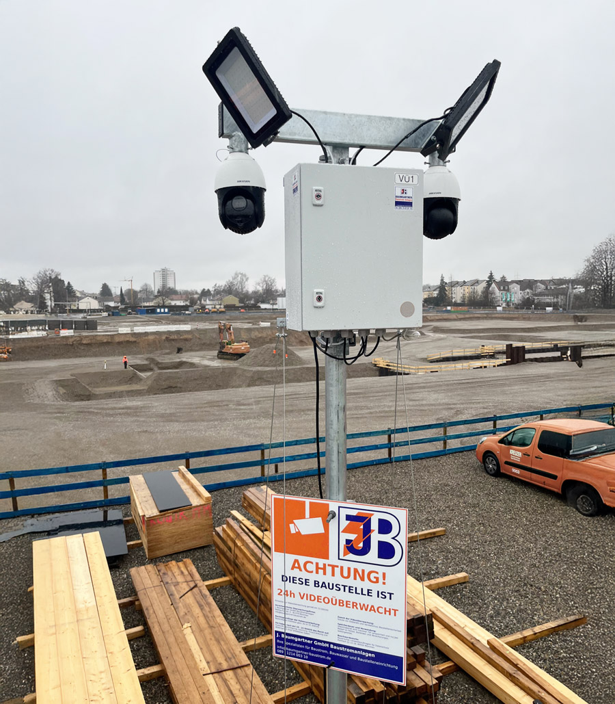
Bau: Baurobotik
Das Einsatzgebiet von Robotern im Bauhauptgewerbe ist grundsätzlich unabhängig vom bauspezifischen Geschäftsmodell bzw. unabhängig vom Segment, der Aktivität und der eigentlichen Arbeitstätigkeiten.
Mehr dazu in:
Digitales Bauen und Baurobotik
im Master
Betrieb: GIS (Geoinformationssystem)
GIS
Geoinformationssysteme sind Informationssysteme zur Erfassung, Bearbeitung, Organisation, Analyse und Präsentation räumlicher Daten. [DIN EN ISO 19101-1, 2014]
Mehr dazu in:
Geodäsie
im 2. Semester
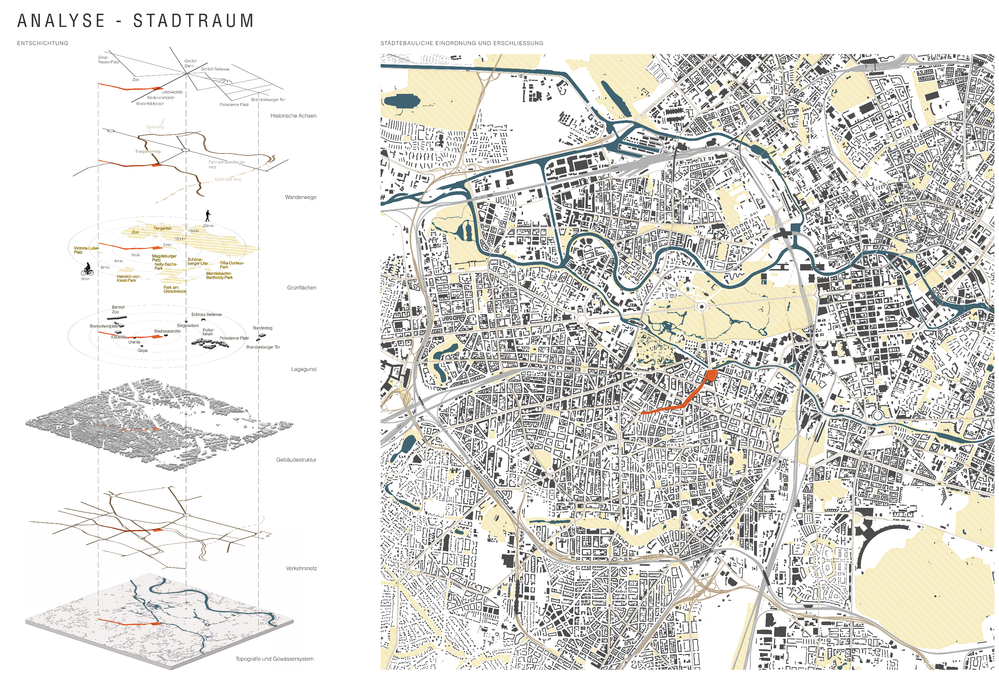
Betrieb: Gebäudeautomation
Gebäudeautomation
Gesamtheit von Überwachungs-, Steuer-, Regel- und Optimierungseinrichtungen in Gebäuden. [DIN EN ISO 16484-1, 2008]
Mehr dazu in:
Grüne Digitale Zwillinge und Smart City
im Master
Betrieb: CAFM (Computer-Aided Facility Management)
Facility Management
Facility Management (FM) ist die Integration von Prozessen innerhalb einer Organisation zur Erbringung vereinbarter Leistungen zur Unterstützung und Verbesserung der Effektivität der Haupttätigkeiten. [DIN EN 15221-1, 2007]
CAFM
CAFM ist die IT-gestützte Umsetzung des FM durch computerbasierte Informationssysteme. [Computer Aided Facility Management – CAFM; Begriffsbestimmungen, Leistungsmerkmale, 2013]
Mehr dazu in:
Bauwirtschaft
im 5. Semester
Programmieren war gestern?
Schreibt noch jemand selbst Code in 2026?
90 % der befragten Profis nutzen Coding-Agenten mindestens wöchentlich.
Umfrage unter über 15 000 Berufsentwicklern, Mai–Juli 2026.
JetBrains: AI Coding Agents, August 2026
Vibe Coding: Von neuen Anwendungen zur Disruption ganzer Softwaremärkte
OpenClaw
Neue Kategorie: Agent, der selbständig handelt
- Nov. 2025, erstellt mit OpenAI Codex
- Steuert lokale Werkzeuge und Dateien
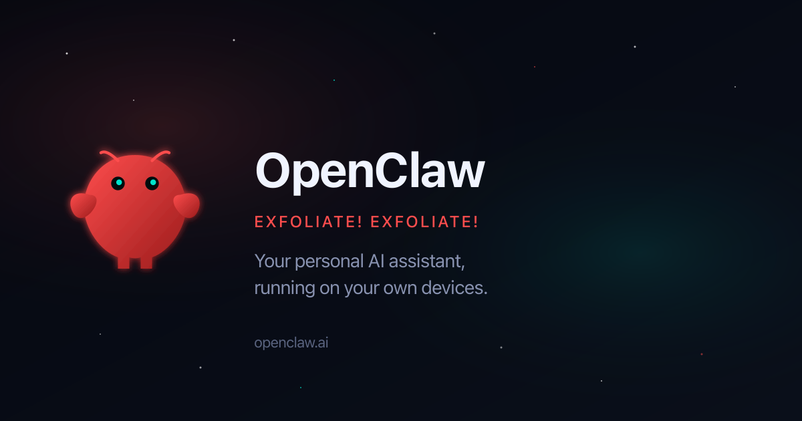
Konkurenzlos Kostenlos (MIT-Lizenz)
CAD-Klon im Browser
CAD-Software: Prototyp in 72 Stunden
- Sep. 2026, erstellt mit Claude Opus 5.5
- Prototyp, kein Ersatz für SolidWorks
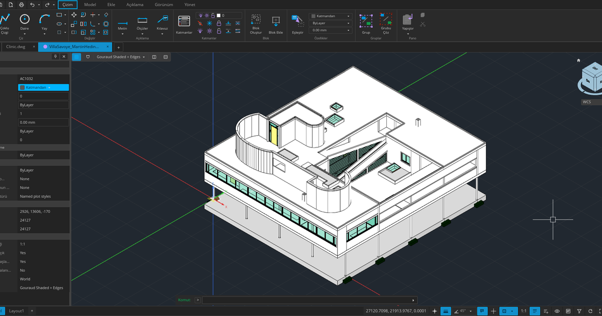
2.820 $ SolidWorks Standard pro Jahr (Listenpreis USA)
ArtCraft: Adobe-Klone
Ganze Suiten: sieben Anwendungen, Alpha
- Okt. 2026, Rust, Claude Opus 5.5
- Photoshop, Illustrator, Premiere u. a.
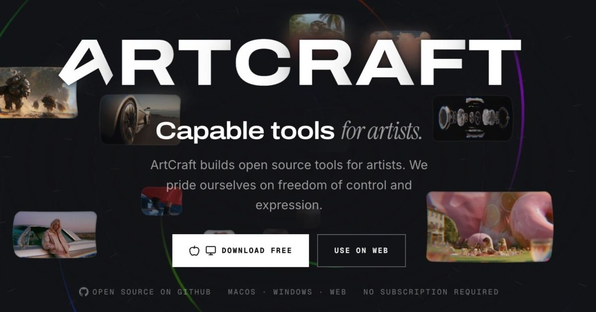
936 € Creative Cloud Pro pro Jahr (77,99 € × 12)
Hörsaalfrage
Warum sollten wir überhaupt noch programmieren lernen?
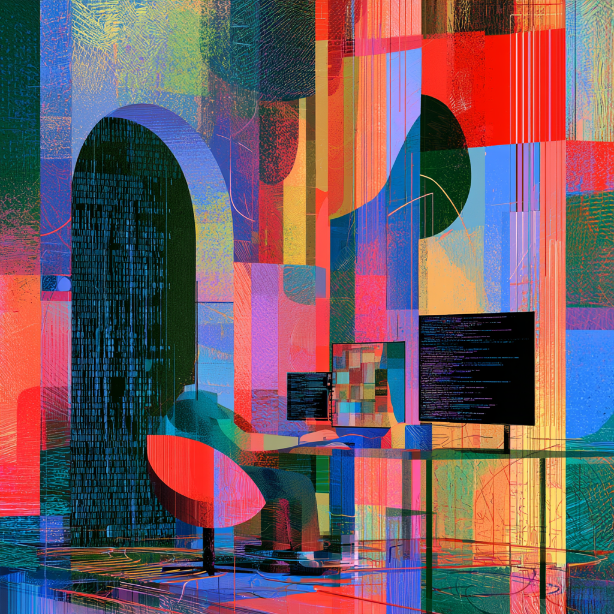
Der Code läuft. Aber ist er richtig?
- Ausführbar: Über 95 % der KI-Lösungen laufen fehlerfrei.
- Geprüft: Nur etwa 55 % bestehen die Sicherheitstests.
- Fachlich korrekt: Das misst kein Benchmark. Das prüfen Sie.
Veracode, März 2026: 80 Aufgaben, 4 Sprachen, 4 Schwachstellenarten.
Veracode: Spring 2026 GenAI Code Security Update
Hörsaalfrage
Würden Sie eine Brücke freigeben, deren Statik eine KI berechnet hat?
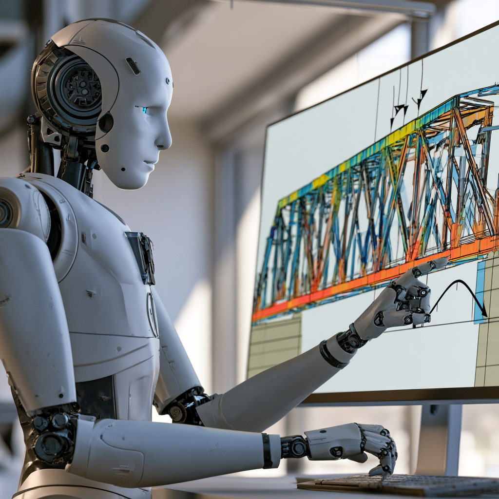
Warum Ingenieurinformatik?
KI kann programmieren. Aber wer weiß, ob das Ergebnis stimmt?
- Algorithmen: das Problem verstehen
- Programmierung: Code lesen und beurteilen
- Debugging: Fehler systematisch finden
- Datenbanken: Daten und Zusammenhänge prüfen
- Modellierung: Annahmen und Randbedingungen kennen
- Verifikation: Ergebnisse unabhängig kontrollieren
ChatGPT o3 in der FE-Civil-Prüfung
Oblitas, Adeeb & Cruz-Noguez: Performance of AI Chatbots on the Fundamentals of Engineering Civil Exam, Discover Artificial Intelligence, 2025.
Referenzen
Questions

Artificial
Intelligence